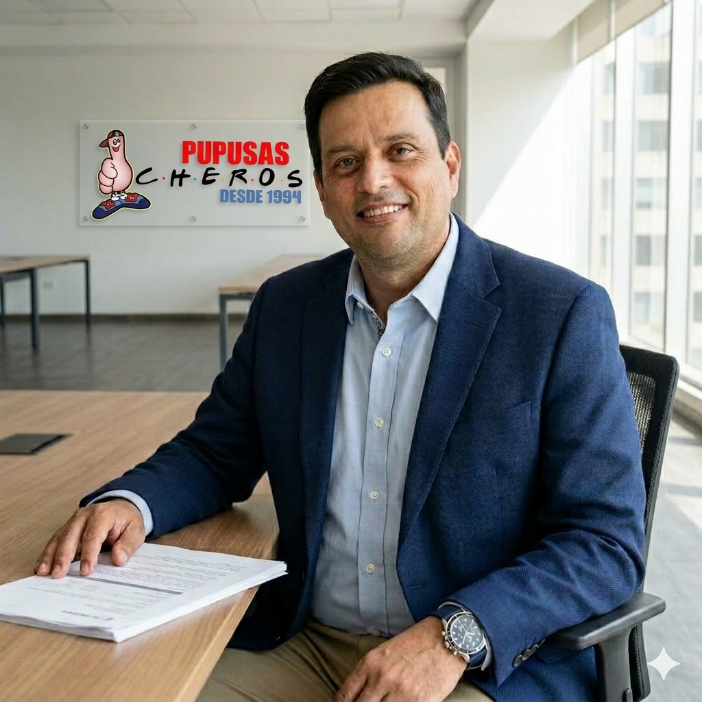

Pupusas Cheros
Màs que pupusas, Una historia que contar.
Preparadas al momento con ingredientes frescos y una receta que ha pasado de generación en generación

El inicio de un sueño (1994)
Nuestra historia no se escribe con tinta, sino con el aroma del maíz tostado y el calor del comal. En 1994, lo que comenzó como un profundo anhelo de compartir la riqueza de El Salvador, se convirtió en la semilla de lo que somos hoy. No buscábamos solo abrir un negocio; queríamos traer con nosotros la esencia de nuestra tierra. La herencia de nuestras manos Con la experiencia técnica aprendida en el corazón de El Salvador y una pasión innegociable por la comida, entendimos que la pupusa perfecta es un arte. Desde hace tres décadas, cada vez que nuestras manos palmean la masa, estamos honrando una tradición que ha pasado de generación en generación. No solo servimos comida; servimos años de perfeccionamiento, cultura y orgullo salvadoreño. Nuestra esencia A lo largo de estos años, hemos aprendido que nuestros clientes no vienen solo por el sabor, sino por el recuerdo y la calidez de un hogar. Por eso, en cada plato entregamos nuestra trayectoria y nuestro corazón. Porque para nosotros, esto es más que pupusas, es una historia que contar... y queremos que tú seas parte de ella. Yassid Molina (Fundador)